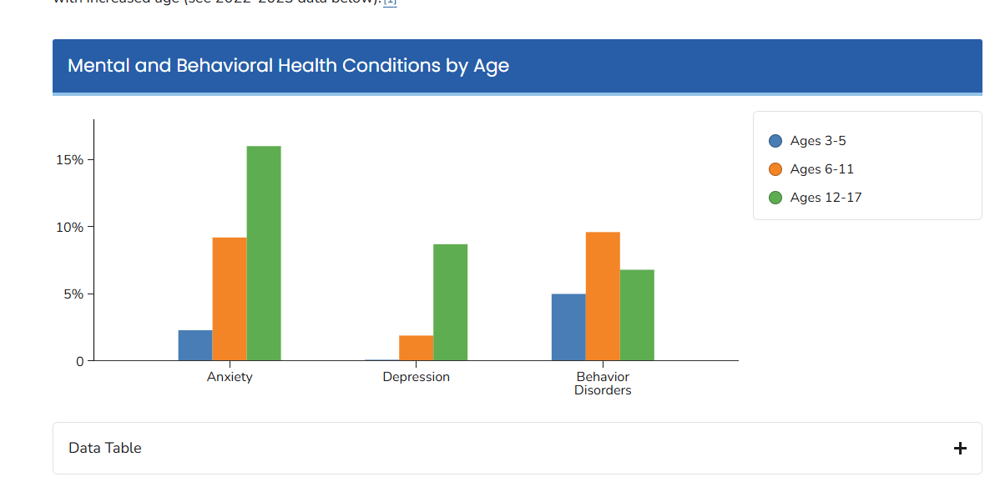

Mental health issues are conditions that affect how a person thinks, feels, behaves, and relates to others. They can range from temporary distress to long-term disorders that interfere with daily life
Common adolescent mental health issues include anxiety, depression
The most common mental health issues in teens in 2025 are anxiety and depression, which are often linked

Nearly 60% of teens report experiencing some form of mental health challenge, such as anxiety or depression.
Some soulutions are
Eat healthy, regular meals
Stay hydrated
Get regular exercise
Make sleep a priority
Seek Help (if needed)
Focus on positivity